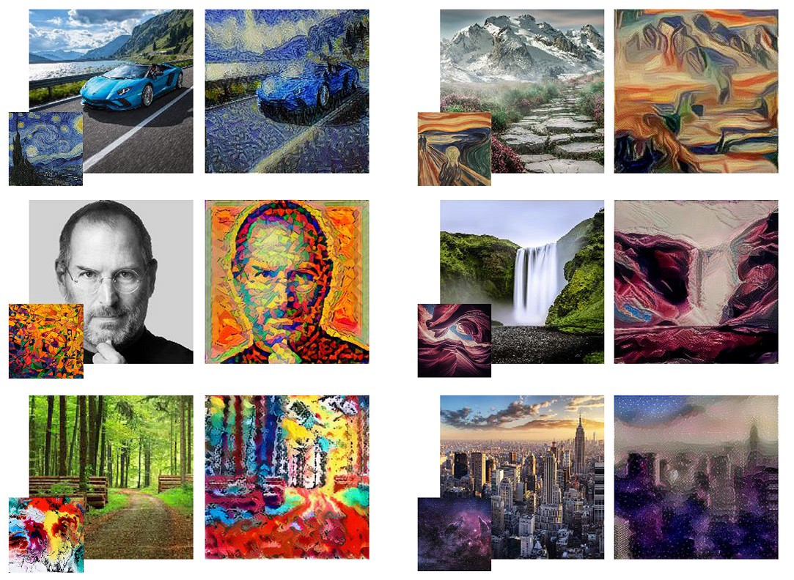

Neural style transfer (NST) is a very neat idea. NST builds on the key idea that,
it is possible to separate the style representation and content representations in a CNN, learnt during a computer vision task (e.g. image recognition task).
Following this concept, NST employs a pretrained convolution neural network (CNN) to transfer styles from a given image to another. This is done by defining a loss function that tries to minimise the differences between a content image, a style image and a generated image, which will be discussed in detail later. By the end of this tutorial you will be able to create very cool artwork like below.
